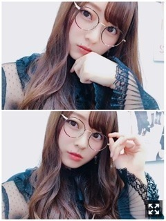
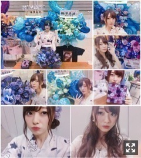
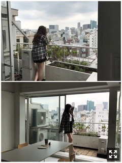
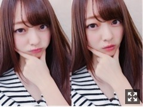

まだかな金木犀〜。梅澤美波
みなさまこんにちは！！
乃木坂46 ３期生の
梅澤美波です！！

きのう！
SHOWROOMありがとうございました☺︎
最近はね〜、外出ると、
高校のときテストで午前中で学校が終わり
自転車で帰ってた頃を思い出す☺︎（笑）
あとは文化祭の準備をしてた頃☺︎
そんな時期の匂いに似てる！！
マニアック（笑）
まだ金木犀の匂い嗅いでないな〜
やることが可愛くてたまんないよね（笑）
全握のとき写真撮るの忘れてて
あ〜忘れちゃったね〜って話してて
だけど急に自撮りちょうだいって言ってきて
なんだと思ったらあんなことして
かわいい（笑）（笑）
ほっておけない存在です☺︎
ももこの持つ雰囲気とか性格とか
きっと今までも周りの人や友達や先輩に
愛されて大切にしてもらってきたんだろうな〜と思う☺︎
ももこの今の周りを見ても改めて思うし☺︎
だって、守りたくなる、し、ほっておけないもん（笑）
ももこ、誕生日おめでとう☺︎
しばらくの間同い年☺︎
ももこらしく！！( ˙-˙ )౨
先週末のスペイベありがとうございました！
アーチェリー大会と乃木坂検定と黒ひげ！！
あのね〜アーチェリーはみなみもやりたいって思ったし、乃木坂検定は試験監督みたいに出来たのがたまらなく楽しかった☺︎（笑）
黒ひげはいつもの顔ぶれの方がたくさんで
いつもより長くお話できるし
ゲームはどきどき楽しいしで幸せで貴重な時間でした☺︎☺︎
ありがとう！みんな頑張ってて刺激を受けたよ〜わたしも頑張らなければ〜みんな色々がんばれ〜
そして月曜は久しぶりすぎる個別握手会！
18枚目１発目の個握なんだけど
もう19枚目が発表されてるから
なんだか不思議な感覚でございましたん( ¨̮ )
１．２．３部は浴衣！
５部は私服！
５部に来た方が
浴衣見れなかったのめちゃくちゃ悔しい〜
って口を揃えていくの、申し訳無かったけどなんだか可愛かったよ（笑）
心の中でへっへっへと悪魔が笑ってた☺︎
また来年ね、おあずけ！
１部は赤で３部は白紫( ˙-˙ )౨
乃木坂入る前は毎年浴衣着てお祭り行ってたり姉がいたりで浴衣はたくさんありまして☺︎
自分で着たんだよ〜( ˙-˙ )౨
時間が無くて写真撮れなかったの(；＿；)

今回もこんなにかわいいいいお花、たくさんありがとう☺︎☺︎
３期生１周年のお花も！！！
幸せでいっぱい！
17枚目よりも確実に来て下さる方の数が増えてるのを実感してて、なんだか嬉しい限りです。初めましての方が増えた☺︎
顔覚えるのは得意と言いつつも
名前は時間がかかります、ごめんね
名札とかあるとめちゃ覚えやすい！
次来るから名前覚えててって言われても脳みそが追いつかず覚えてられない時もあります、、
時間をかけてゆっくりね☺︎
顔はだいたいすぐ覚えるよ（笑）( ˙-˙ )౨
いつもの方もいつも本当にありがとう。☺︎
来てくれると安心します、来ないと不安になります、馴れ馴れしくなってごめんね〜仲良くなったってことで許して(..)
すごく存在が大きいんだ〜
また明日もよろしく頼んだ( ˙-˙ )౨
(もう季節的に秋だけど夏服着ちゃおうかな〜いい？( .. )（笑）
質問返し◎
Q.お風呂の設定温度は？
A.マニアックな質問（笑）42℃！
Q.冬ソングと言えば！
A.ん〜、、
AAAさんの「Miss you」、
ハジ→さんの「White Winter Love」とか
Aimerさんの「雪の降る街」とか
Nissyさん「GIFT」、
SILENT SIRENさん「恋い雪」、
back numberさんの「クリスマスソング」
とかたくさん！！冬ソングに限らず、冬の時期によく聴いていた曲は私の中で冬ソングになります☺︎（笑）
舞台『見殺し姫』、メインビジュアル公開されました！
今回はとても独特な世界観があり、
撮影時もすごく緊張したのですが
背の高い私に着せたいと衣装さんが選んでくださったお洋服を着たら
想像よりモード寄りになってしまったということで
メイクさんが急遽変更でメイクも髪型も衣装に合わせてしてくださいました！
下ろしストレート予定だった髪の毛も
アップすることに！
輪郭がコンプレックスな私からしたら
顔周りの髪の毛も無しなのがとても不安で
公開がものすごく怖かったのですが
新しい１面を見てもらえる、と思って
とてもいい機会だなと思いました！
ここまでさらけ出すのはあまりない気が！
演技は新しい発見の日々！
簡単なことでもない、
単純なことでもなくって
とても難しくて格闘する日々です。
正解がないのが面白いな〜って思う
同じ役でも演じる人が変われば全く別人物になる
難しい！難しい！って悩む日々！
そんな作業も当たり前ではないんだなあとしみじみ！ありがたいです！
とりあえず私はプリンシパルで出られなかった２幕の分、インフルエンザで出られなかった２日間４公演分、
ここに全てぶつけるつもりです！
舞台なんてそうそうできることではない！
やるならやってやる！
という気持ち( ˙-˙ )౨（笑）
楽しんだら勝ちだと思ってる！
楽しみたいと思ってる！
せっかく毎日舞台に立てるんだから！
素敵な脚本があるのだから！
見に来る方、お楽しみに！
応援しててね、ずっと見てろよ〜
メインビジュアルがとても素敵なので
それに負けずに舞台がんばります！
妹たち〜〜
かわいい妹たち〜〜
たまみとれんか☺︎
２人ともかなりの甘えんぼうだよ〜
告知◎
▽９／２３ Samurai ELO さま
美女散歩連載、本日発売！
美しくて可愛すぎる白石さんの表紙が目印です☺︎
(白石さん前髪切ったみたいで、、長いのもすき、短いのもとてもすき( .. )♡
▽９／２７ OVERTURE さま
私とかえでと久保ちゃんの3人で！
▽９／２９ 平塚ウォーカー さま
創刊号！地元トークたっぷり！
▽１０／６〜１５ 舞台『見殺し姫』
(８．９除く)
いよいよ近づいてきました！頑張ります！☺︎
▽１０／８．９ 全国ツアー@新潟
地方公演ラストです！楽しみます！☺︎
▽１０／２２ めざましテレビ PRESENTS T-SPOOK ～TOKYO HALLOWEEN PARTY～
３期生が出演させて頂くことになりました！ハロウィン大好きなのでとても嬉しい、こうして３期生として出演させて頂けること、本当に有り難く思います。このイベントは以前から知っていたのでとても楽しみです！ぜひ遊びに来てください☺︎
チェックよろしくお願い致します☺︎

Samurai ELOさまオフショット！
前回出させていただいた時からELOさまのお洋服がとても好きで楽しかったの☺︎
お家に住んでる風かな？こんなとこ住みたいって思う撮影でしたん☺︎
私ももう買ったのだけど、いつもと違う表情してた気がする！不意の顔だったり、、、
ぜひチェックしてね！！
あっそういえば相変わらず空フォルダちょこちょこ活動してます☺︎
毎日撮れないことがほとんどだけど
気づいたらすぐ撮る！
癒される。☺︎
また今度載せるね〜☺︎
10月の個握のコスプレ探さなきゃ〜
なににしよかな〜（笑）
あ〜顔がお饅頭になってきた〜
明日握手会来て下さる方、よろしくね〜☺︎
最近よく、「もっと話したいことたくさんある」って言ってくださる方が多いんです
長く話したい、時間足りないって私自身思うことめちゃくちゃある、だけど、会いに来てくれるだけで嬉しい！気持ちは届いてる！
時間は短くても大切にしたい！って思う☺︎
来年まで握手会の日程は決まっているし
楽しみたい！
だからこれからもよろしくね☺︎
(よそ見しすぎないでね、悲しくなるよ〜
初めましての方もよろしくね( ¨̮ )
楽しみにしてます☺︎
新しいであいが楽しみだ〜
来られない方も、
パワ〜( ˙-˙ )౨
19枚目の握手会取ってくださった皆様も
本当にありがとう！来年まで楽しみが詰まってる〜☺︎☺︎
さあ明日のお洋服決めて寝ます〜

だいふくみなみが最近ないと言われたので、、
おやすみ〜
みんながんばれ〜うめもがんばってるよ〜
夢で逢おうな〜（笑）
(握手会で夢で会えなかったって結構言われたんだけど、たぶんだけどたぶん、想いが足りてない( ˙-˙ )౨（笑）
１人空振りしていることが多々あるんだな〜と最近気づきました、☺︎
でも私は私なりにありのままでいたいなあと思っている、変に曲がりたくはない、曲げたくはない
きっと人生こんなもんって考えれば軽い！余裕！
みんながんばろな〜
Original：https://www.nogizaka46.com/s/n46/diary/detail/41126?ima=0520&cd=MEMBER